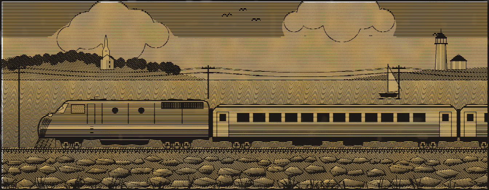

HARBOR & HUDSON LINES
Dining Car
THE HARBOR LIGHT
BOSTON · PROVIDENCE
NEW HAVEN · NEW YORK
BOSTON · PROVIDENCE
NEW HAVEN · NEW YORK

The Harbor Light on the shore line, east of New Haven.
FOG AT THE AIRPORTS? TAKE THE TRAIN.
TABLE D’HOTE BREAKFAST
Complete, with coffee, tea or milk.
No. 1
Chilled orange juice, two eggs any style, buttered toast
1.35
No. 2
Half grapefruit, griddle cakes, maple syrup, country sausage
1.65
No. 3
Tomato juice, codfish cakes, baked beans, corn muffin
1.85
FROM THE BROILER, AT ALL HOURS
Rib Eye Steak Breakfast
5.25
Seared to your order and rested, with two eggs fried, crisp hash brown potatoes and buttered toast.
SANDWICH BOARD
Baked Virginia ham on rye
.95
Chicken salad on white
1.10
Club sandwich, three decker
1.75
Grilled American cheese
.80
COMPLETE DINNERS
With chowder or juice, potato, vegetable, rolls, dessert and coffee.
Broiled Boston scrod
3.75
Roast young turkey, sage dressing
3.95
Yankee pot roast, brown gravy
4.25
Junior plate, under twelve
1.10
Beef patty, whipped potatoes, peas and milk.
FROM THE PANTRY
New York Cheese Cake
.85
Baked slowly in a water bath on a crumb crust, chilled overnight, under sliced fresh strawberries.
Raspberry Jam Fingers
.60
Butter shortbread baked pale and crisp, sandwiched in pairs, dusted with powdered sugar.
Apple pie with Cheddar .60
.45
Indian pudding, vanilla ice cream
.50
Seating is by call. Please wait in your coach until the steward calls you.
FORM DC-70